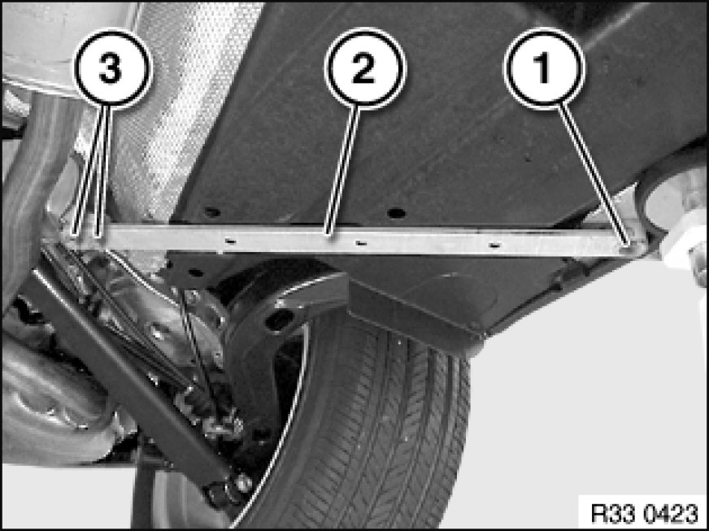

Removing and Installing/Replacing Left or Right Tension Strut
33 32 170 - Removing and installing/replacing left or right tension strut

Note:
Build date from 07/06:
Thread inserts in compression strut for securing tension strut have been omitted.

Important!
Observe safety instructions 00 .. ... Lifting Vehicle With A Lifting Platform for raising the vehicle
Driving without tension struts is not permitted!

Release screws (1, 3).
Remove tension strut (2).
Installation:
When replacing compression strut: If necessary, replace threaded screws (3) with self-tapping screws.
Tightening torque 33 32 26AZ Control Arms and Struts (Rear).